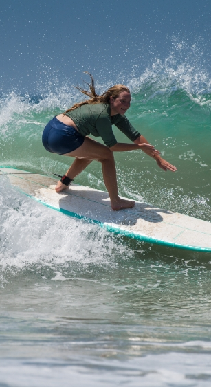
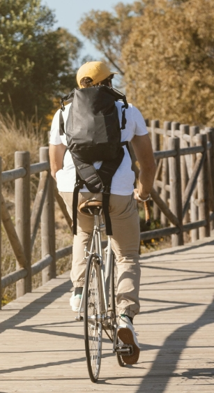
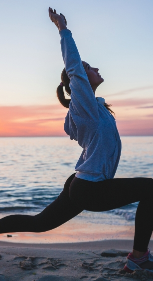

BARCELONA
- 
- 
- 
- 환율
- 1EUR
- 1,499.46원
- 추천
-
5월 ~ 7월
9월 ~ 10월
- 언어
- 스페인어
- 비자
- 90일
- 무비자
- 항공
- 직항
- 14시간
- 전압
- 50 Hz
- 230 V
FC 바르셀로나의 홈구장으로, 축구 팬들에게 성지와 같은 곳 입니다.
경기 관람: FC 바르셀로나의 경기를 직접 관람.
박물관 투어: 구장의 역사와 FC 바르셀로나의 전설적인 선수들에 대한 전시.
바르셀로나의 중심가로, 다양한 상점, 레스토랑, 거리 예술가들이 있는 활기찬 거리입니다.
산책: 거리의 다양한 상점과 카페 탐방.
보케리아 시장 방문: 신선한 식재료와 현지 음식을 체험.
고딕 양식의 대표적인 성당으로, 웅장한 외관과 정교한 내부 장식.
내부 투어: 성당의 아름다운 스테인드 글라스와 조각상 감상.
옥상 투어: 바르셀로나의 전경을 감상할 수 있는 옥상 전망대.
가우디의 혁신적인 디자인과 건축 기법이 돋보이는 건물.
오디오 가이드 투어: 건물의 역사와 건축적 특징에 대한 자세한 설명.
야경 관람: 조명이 비치는 밤의 카사 바트요 감상.
가우디가 설계한 공원으로, 환상적인 모자이크 타일 장식과 독특한 건축물.
산책: 예술 작품과 자연이 조화된 공간에서의 산책.
가우디 하우스 뮤지엄 방문: 가우디의 생활과 작업 공간을 엿볼 수 있음.
부산광역시 해운대구 모험로 123
(우편번호 48095)
123-45-67890
평일 10:00 ~ 18:00 / 주말 및 공휴일 제외
buuu0708@gmail.com
1234-123-1234
051-000-0000